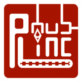
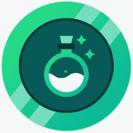

Muuu Finance Muuu Finance 提供最简单的方法来最大化您的奖励，而无需锁定 DEX 和 Lending 协议的原生资产。 Muuu Finance 是 Astar Network 上的第一个原生收益助推器，可让您在不锁定 KGL 的情况下最大化您的
My Crypto Heroes My Crypto Heroes (MCH) 是一款基于以太坊和多边形区块链的多人角色扮演游戏。通过任务升级你的历史英雄，加入玩家与玩家的战斗，征服 MCH 世界。您的英雄和物品由区块链
My Crypto Saga My Crypto Saga 是一款适合 2 到 4 名玩家的心智卡牌游戏，您可以在其中与其他玩家实时对战。10张“Kami-cards”组织起来，你可以用你的策略、技巧和
My DeFi Pet My DeFi Pet 是一款结合了 NFT 和 DeFi 功能的区块链游戏，为用户提供了非常独特的方式来体验游戏并通过 Play2Earn 赚钱。 My DeFi Pet 结合了传统游戏架构、NFT 和 DeFi 特性，带来独
My Pet Hooligan 来自 AMGI Studios 的交互式 NFT 体验。888 个宠物流氓的 NFT 集合——独特的 3D 角色在以太坊区块链上构建，具有各种独特的特征。您的 NFT 不仅具有实用性，还将在我们不
MyFunding.Network MyFunding.Network 是一个开源智能合约，它使用专业交易者提供的下一代技术分析和策略来产生高利润交易。 MyFunding.Network 是最先进的交易机器人 dapp，可为加密交易提供最大利润。
MyRichFarm My Rich Farm 是币安智能链上的一款农场游戏，其中 RCH 是游戏中唯一的代币。最大可能的 RCH 发行量将不超过 50 亿。我们计划使用智能合约将代币分配到 4 个部分，以确
Plasma Bears Plasma Bears 是一款关于收集、建造和冒险的游戏。但是，该项目在 Loom 侧链上运行并已停止。Blockade Games 可能会重振该项目，但目前这些熊的部分是过去的收藏
Plato Farm Plato Farm 是一款 NFT 游戏，支持 HRC721、HRC1155 和 OEC1155 协议。玩家的任务是在一个小农场种植植物和饲养牲畜，以赚取 MARK 和 PLATO 代币，然后可以将其与各种
Playboy Rabbitars Official 花花公子兔子是一个由 11,953 只独特的、不可替代的兔子组成的以兔子为主题的文明，灵感来自花花公子的肖像画、遗产和传说。在元节的背景下，兔子是作为 ERC-721 代
PlayDapp Marketplace PlayDapp MarketPLAce 是一个 C2C 市场，您可以在其中轻松买卖 NFT（非同质代币）游戏物品和其他基于区块链的数字资产，专注于奖励和支持开发者和玩家。所有 PlayDapp 游戏都是可
PlayMining PlayMining 是一个 Play to Earn NFT 游戏平台，您可以在其中玩各种免费游戏。你可以在玩游戏的同时赚取DEAPcoin(DEP)，你可以用它来交易独家动漫/漫画NF
Plenty Plenty 是 Tezos 上的一体化去中心化平台。使用新的 Plenty Network 用户将能够： 1.交易不相关的资产，和/或紧密相关的资产，以低成本和接近零的滑点与亚瑟的平坦曲线交易
 PLinc Hub PLinc 生态系统是一个旨在促进增长的融资周期。许多 dapps 目前正在为生态系统做出贡献，其中一些来自 PLinc 团队，而其他一些来自外部。预计交易量会随着时间的推移
PlumCake Finance PlumCake 是由经验丰富的开发团队设计的全新 DeFi 项目，作为币安智能链上的新一代通缩收益农场。 除了 Goose Finance 引入的回购销毁机制外，PlumCake 还实施了独特的
Pocket Finance Pocket Finance 于 2021 年 11 月推出，是一个加密产品生态系统，包括农场、矿池、保险库、套利交易、NFT 市场、DAO、预测市场、借贷协议，旨在创建一体化套件。 除
PocketArena Pocket Arena 是一个基于 Play-to-Earn 的 NFT DApp 游戏门户和平台，通过 NFT 市场支持基于技能的锦标赛和用户生成的 NFT 游戏。Pocket Arena (PA) 由 Pocket Arena 代币“POC”提供支持，这是一
PocoLand Pocoland 是一款基于 NFT 区块链的游戏，具有迷人的游戏功能。目前在 Pocoland 的 PvE 和 PvP 是用户赚钱的两个有利方面。后来，在 Pocoland 拥有土地也有助于用户获得被动收入。用户可
Pod Together Pod Together 是作为 DeFi 农业彩票而构建的，是一款每个人都是赢家的储蓄游戏。由 Pool Together 分叉而成。你可以： 以疯狂的 APY 回报质押您最喜爱的代币 赢得每周抽奖的机会。 独
Podping on Hive Podping 是基于 RSS 的开放式播客生态系统的 WebSub 替代方案，允许快速、全球通知播客提要更新。使用 Hive 区块链，Podping 允许各种 Podcast 托管平台发送 Podcast 提要已更改的
 PoisonSwap 赚取更多 PSN 邀请好友并通过空投和预售获得 25% BNB 和 PSN 奖励。 2021 年 8 月 5 日 - 空投 参与者可以加入空投，之后他们可以将他们的 PSN 代币兑换成 PSX 代币 2021 年 8 月 5 日
PolkaBridge PolkaBridge 是一个去中心化的应用平台。PolkaBridge 最引人注目的产品之一是 PolkaBridge DEX——一个去中心化的交易所，它允许用户在没有任何中心化组织的情
PolkaEx PolkaEx – Shiden 网络上的第一个 DEX。它是由波卡驱动的跨链 DEX，利用 Shiden 和 Astar Networks 的强大功能，提供更高的 TPS、更低的交易成本和流畅的交易。PolkaEx
Polkamarkets Polkamarkets 是一种自主预测市场协议，专为多链信息交换和交易而构建，用户在去中心化和可互操作的 EVM 中对现实世界事件的结果持仓。 在任何与 EVM 兼容的区块链上部署
PolyBlocks PolyBlocks 是 Polygon 网络上第一个用于链上生成 NFT 的开放平台。 与以太坊上的 Art Blocks 和 Tezos 上的 fx(hash) 类似，PolyBlocks 是一个用于在 Polygon 上生成 NFT 的开放平台。其直观的用
PolyBunny PolyBunny 是一个新的、快速增长的 DeFi 收益聚合器，用于 QuickSwap 和 SushiSwap。PolyBunny 协议使农民能够利用他们寻求产量的倾向来优化产量复合策略。
Polycake Finance Polygon 上排名第一的 Yield Farm 和 Defi 聚合器。所谓DeFi中的聚合器,就是一个支持多种 DeFi 协议的聚合平台,它可以在各个提供流动性挖矿的DeFi协议之间自动进行
Polycat Finance Polycat Finance 是最早在 Polygon 上推出的单产农场之一。凭借一支极其热情和知识渊博的团队，已经成长为 Polygon 上最值得信赖的平台之一，并经过了 Paladin、Obeli
ABCMETA-VOUCHER 使用您的 NFT 赚取奖励 NFT 市场，交易您的 NFT 并赚取利润。通过Bid-to-Earn赚取USDT。 Mint ABCMETA-ID - 您独特的像素化 NFT。竞标 ABCMETA-LA
Abducting Mfers Depolyer V2 绑架集体：v2 NFT 在过去 7 天内售出 89 次。 绑架集体：v2 的总销售额为 5.61 万美元。 一个被绑架的集体：v2 NFT 的平均价格为 63 美元。 有 1,208 个绑架集体：v2 所
Abe's 3777 ways to die 安倍的 3777 种死亡方式 NFT，住在以太坊，现在免费薄荷 总供应量 3777，每个钱包限制 5 个 NFT 铸造一个NFT你将获得10亿ABECoin ABECoin 总供应量 37770
Abnormal Abstract 具有 4k 图像的抽象 PFP 项目没有推特没有路线图只有 4k 抽象的 过去 7 天内没有出售异常摘要。 具有 4k 图像的抽象 PFP 项目 没有推特没有路线图只有 4k 摘要 什么是异常
Aborted Babies 流产的婴儿👼 2022 年最落后的铸币厂。ERC 5050 合同实施，铸币后有 50% 的机会获得即时退款。 ❗ 每个钱包 1 个免费，然后每个婴儿 0.005 个。 仅提供 2000 个免费薄荷糖❗
ABSTR4CTION | P4SS ABST4CTION PASS (444) 可让您获得社区创造的福利，完全依靠您的想象力。 团队负责人 Josiah Kincop 想要传达他的 ABSTR4CT 梦想，以便更多地了解他所看到的。 这个通行证让他和社区可以在一

 是一款基于以太坊和多边形区块链的多人角色扮演游戏。通过任务升级你的历史英雄，加入玩家与玩家的战斗，征服 MCH 世界。")


，你可以用它来交易独家动漫/漫画NFT。")


，它将 DeFi + Pokémon + NFT 三个世界中最好的结合在一起。它允许用户通过质押 BNB 来被动赚取 BNB。")


 可让您获得社区创造的福利，完全依靠您的想象力。")